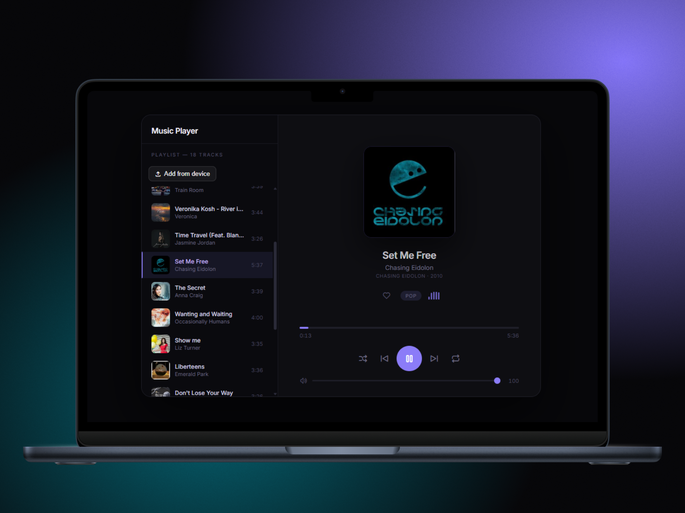
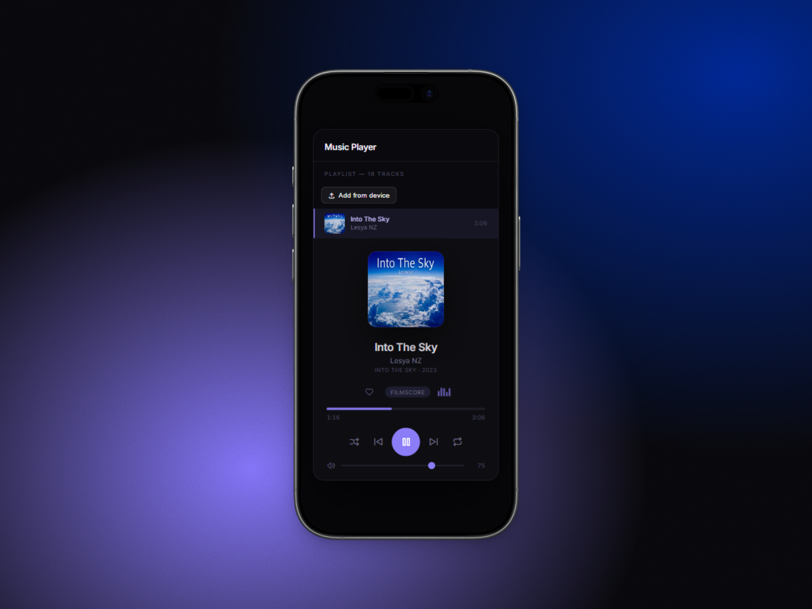

Music,
the way it should sound.
A dark, clean, immersive interface designed to play your tracks without distraction.


A dark, clean, immersive interface designed to play your tracks without distraction.

